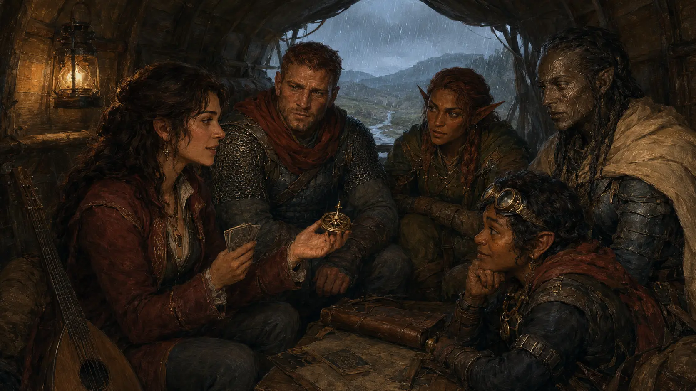
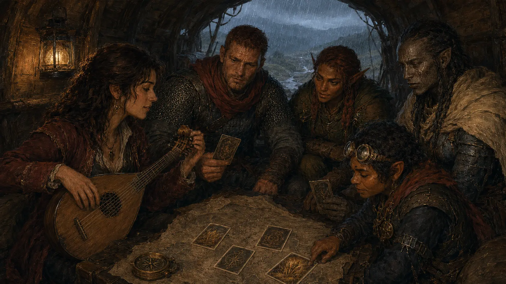
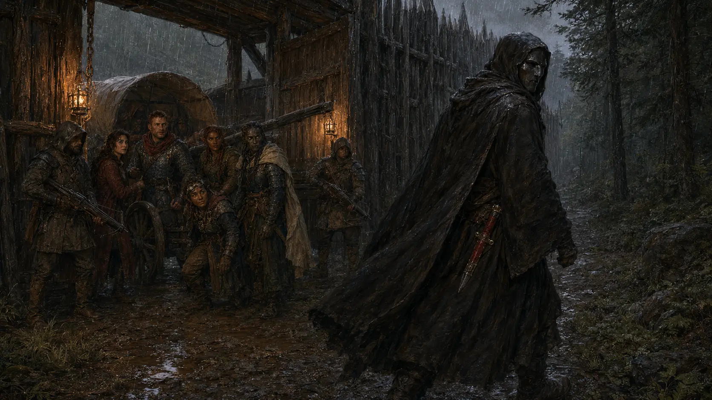
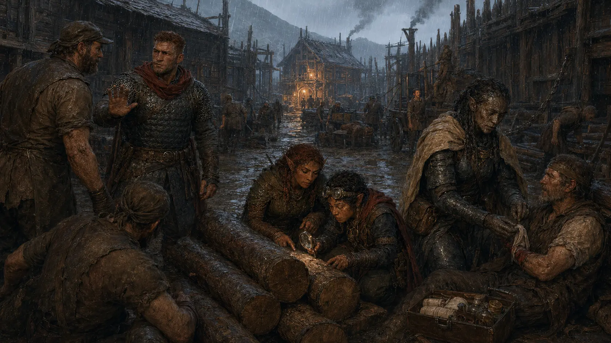
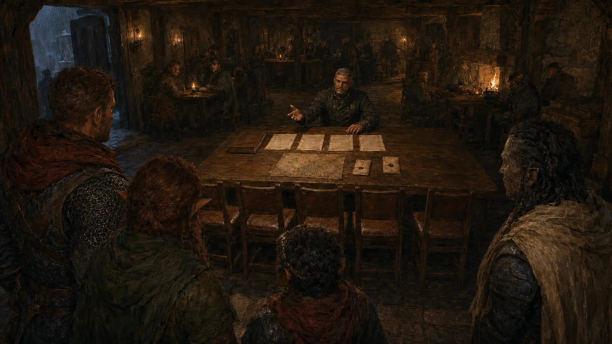

Rain drummed against the wagon roof. Westwatch was still hours away when Mira put aside her lute and produced a brass compass no roadmaker would recognize.
“I call it the Crimson Compass. Five questions. No right answers—only directions.”
Mira
Four answers enter the ring
Bren Alder
A soldier who measures a choice by who must answer for it.
Nyra Redbough
A ranger who wants the evidence returned to the people it belongs to.
Tavi Sparkspindle
An artisan who follows systems until she finds the hand altering them.
Sable-of-the-Last-Well
A healer who asks permission before deciding what help should mean.

The compass promised no prophecy. Mira called it a work in progress: a mirror for what pulled each traveler forward.
The game leaves something behind
- Bren · Sable
- Harvest’s End Festival
- Nyra · Tavi
- Gnome Inventor
Mira “I started a song on the road. Listen and tell me what you think, and I’ll share the map I trust.”
At least one voice said yes. Before the final chord faded, the map belonged to the whole party.

The guards demanded a name, a destination and weapons laid down slowly. The masked passenger offered none of them.
MASKED TRAVELER “They don’t know me. And I didn’t ask them to lie for me.”
GATE GUARD “Then you remain outside Westwatch.”
MASKED TRAVELER “Tonight.”
The red dagger never leaves its sheath
He turned north along the palisade. No attack. No accusation. Only a word that sounded different after the gate closed.

A town introduces itself through pressure
Stops an injured lumber worker from being pushed back onto the line—and notices the overseer fears Warrick’s ledger more than the soldier in front of him.
Find a genuine elven origin seal freshly scraped with a local woodworking tool. The Westwatch inventory mark remains untouched.
Asks first, then cleans and binds the worker’s injury with the unhurried precision of someone who treats consent as part of the cure.
Someone meant to keep the timber. They only meant to erase where it came from.

Warm light, smoke and low conversation met them inside. At the rear table, Captain Bernard Warrick had already laid out four contracts and four empty chairs.
The work waits behind one question
“You’re the four names on the paper. Sit.”
“Before I tell you what you signed for—what did you learn between my gate and this table?”
Captain Warrick
TO BE CONTINUED